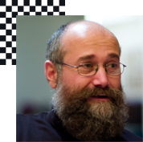
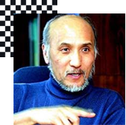
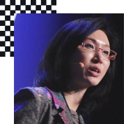

Yochai Benkler
Berkman Professor of Entrepreneurial Legal Studies at Harvard Law School
Benkler studies commons-based peer production and is the author of the seminal book The Wealth of Networks (2006).

"Hello! Sharing world!"
A joyful celebration believing in the value of openness and sharing, creating a positive change with people from more than 80 countries is taking place in Korea.
2015.10.15 (THU) ~ 16 (FRI)
@ National Museum of Korea, Art Center Nabi and more
Listen to the speakers from various countries about the messages of sharing and opening.
.png)
Appreciate various creations applying CC license of artists, organized by Art Center Nabi.
Have the time to share your thoughts and opinions with experts for each topic.
.png)
Try creating your own work using open source license rather than just watching at it.
Get opportunity to network with CC affiliates around the world, also after the summit.

Berkman Professor of Entrepreneurial Legal Studies at Harvard Law School
Benkler studies commons-based peer production and is the author of the seminal book The Wealth of Networks (2006).

Kilnam Chon helped bring the internet to Asia and is an outspoken advocate for the open web and digital commons. In 2012, he was inducted into the inaugural class of the Internet Society's (ISOC) Internet Hall of Fame.

Director of Art Center Nabi and a board member of CC Korea
Art Center Nabi is a leading venue for new media art in Korea, promoting collaboration among science, technology, the humanities, and the arts.
.png)
President of Young Pirates of Europe
European integration, political democracy and the participation of youth through online media are her major concerns. Reda's report outlining potential changes to EU copyright law was approved by the Parliament in July.

Executive Director of the Wikimedia Foundation
Lila Tretikov is the Executive Director of the Wikimedia Foundation, the nonprofit organization that operates Wikipedia. Wikipedia is freely available in 290 languages and used by nearly half a billion people around the world every month.
CEO of Creative Commons, ex-COO of the Mozilla Foundation
Ryan has been leading open-source projects at the Mozilla Foundation, such as the open-source movement.